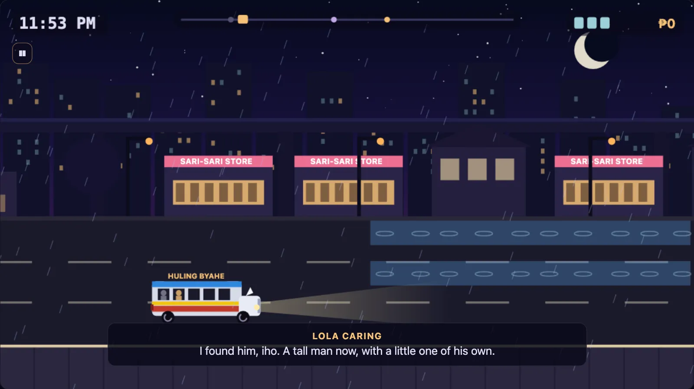

Huling Byahe
The last jeepney of the night

StoryKeyboard · TouchFree, in the browser
Play Huling ByaheAbout the game
Huling byahe means "last trip". You are the driver of the last jeepney of the night, running a route through a Manila barangay from eleven at night until five in the morning. The streets are nearly empty: shuttered sari-sari stores, a lugawan (rice porridge stand) open all night, the LRT passing overhead now and then. The passengers who flag you down are ghosts, and each of them has somewhere to be before the sun comes up.
It is a short arcade driving game wrapped around a quiet story. Over seven nights you meet five passengers, among them a lola carrying ensaymada for her grandson, a nurse finishing a long shift, and an old jeepney barker who spent his life calling out "Cubao! Cubao!" Bits of their stories are collected in a logbook as you go, and one passenger who never says a word is already sitting at the back when you start the engine. Each night has its own weather and mood, from a clear moonlit first trip to rain, fog and Cubao neon, and the last stretch of every night ends with dawn coming up at the end of the street.
How to play
The jeepney drives down a three-lane road. The bottom lane is the curb, and that is where you pick up and drop off. Stop at a PARA sign to let a ghost on, and at a BABA sign to let one off. A stop only counts in the curb lane when you are moving slowly, and if you stop with your front bumper right on the green line you get a SAKTO (just right) bonus.
Going faster earns more barya (loose coins) per second, but it also gives you less time to react. Watch out for tricycles, open manholes, flooded patches, stray dogs and a tanod (barangay watchman) checkpoint, which you have to pass slowly. Swerving past a hazard at the last moment gives you a LUSOT (narrow escape), and chaining them multiplies every coin you pick up.
- Keyboard: up and down arrows change lanes. Hold the right arrow or D for gas. Hold Space, the left arrow or Shift to brake. H sounds the horn, which sends dogs running and makes tricycles pull aside. Esc or P pauses.
- Phone and tablet: on-screen buttons, in portrait or landscape.
- Controller: D-pad or stick for lanes, R2 or A for gas, L2 or B to brake, X or Y for the horn, Start to pause.
Each night gives up to three stars: one for reaching the terminal, one for making every stop, and one for getting through without a bump. Fares and coins buy better brakes, a bumper and a louder horn in the garage between nights.
Tips
- Move into the curb lane early when a PARA or BABA sign is coming. Changing lanes at the last second is how stops get missed.
- Brake before the sign, not on top of it. You need to be slow when you reach the line for the stop to count.
- Use the horn freely. A stray dog that runs off is one less bump.
- Ease off before a checkpoint. The speed gauge shows where you will be let through.
- Only chase a LUSOT combo when the road ahead is clear of stops. A big multiplier is not worth a missed passenger.
The jeepney and the late-night trip
The jeepney began after the Second World War, when surplus American military jeeps were left behind in the Philippines. Filipinos stretched them, added benches and a roof, and painted them, and they became the country's most familiar public transport. Many still carry chrome horses on the hood, a route sign, and the owner's name or a family member's painted on the side. Riding one has its own manners: you say "para" to make it stop, and you pass your fare forward, "bayad po", from hand to hand until it reaches the driver.
Older jeepneys are slowly being replaced under a government modernization program, so the classic jeepney itself is in a kind of last trip of its own.
Ghost stories are a big part of Filipino culture too, and many are set on the road, like the woman in white who flags down a car late at night and is gone from the back seat a moment later. The ones in this game are made up, and they are told gently.